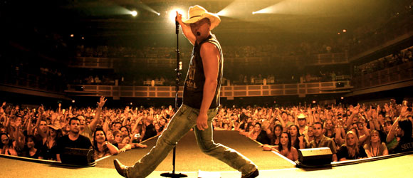

Kenneth Arnold "Kenny" Chesney (born March 26, 1968) is an American singer, songwriter and record producer. He has recorded 20 albums, 14 of which have been certified Gold or higher by the RIAA. He has also produced more than 40 top 10 singles on the U.S. Billboard Hot Country Songs and Country Airplay charts, 29 of which have reached number one on the charts. Most of these have also charted high within the top 40 of the Billboard Hot 100 chart, making him one of the few successful crossover country artists. He has sold over 30 million albums worldwide. He has received six Academy of Country Music awards (including four consecutive Entertainer of the Year awards from 2005 to 2008), as well as six awards from the Country Music Association. He is one of the most popular touring acts in country music, regularly selling out the venues in which he performs. His 2007 Flip-Flop Summer Tour was the highest-grossing country road trip of the year. The Country Music Association honored Chesney with the Entertainer of the Year award in 2004, 2006, 2007, and 2008. Other notable awards he received include the Academy of Country Music's 1997 New Male Vocalist of the Year, 2002 Top Male Vocalist of the Year, and the Triple Crown Award in 2005. He was awarded his fourth consecutive Entertainer of the Year award from the Academy of Country Music on May 18, 2008.
